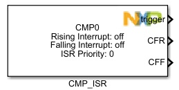
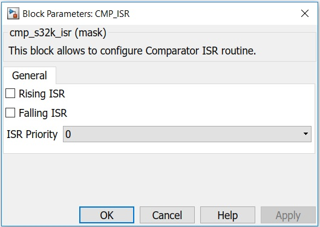

CMP Interrupt Block
The main functionality of the block is to configure CMP interrupts.
Block Image
Inputs:
- None
Outputs:
- Function-Call
- CFR (boolean)
- CFF (boolean)
Parameters and Dialog Box
Rising ISR
Comparator Interrupt Enable Rising
Falling ISR
Comparator Interrupt Enable Falling
ISR Priority (0 - 15)
ISR Level
Block Dependency
Please do the following:
- Use CMP_Config Block to configure the comparator.
Block Miscellaneous Details
- None